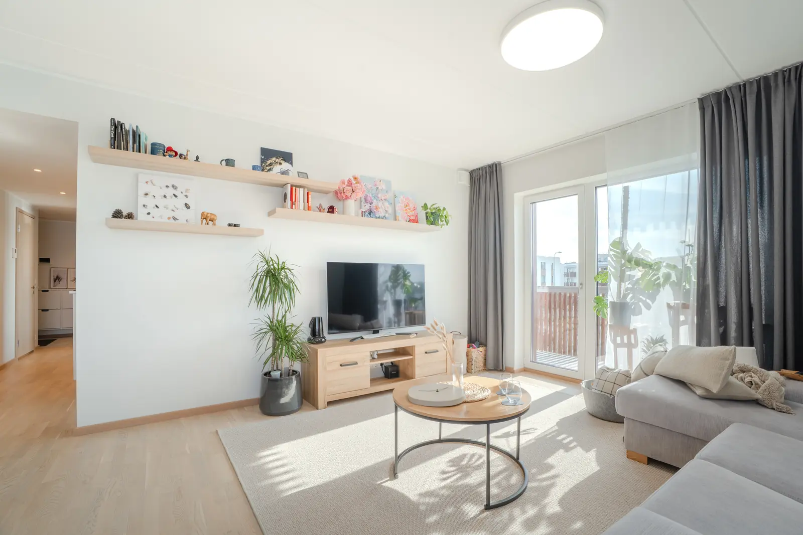

Kuidas müüa korterit ilma maaklerita
Lühivastus
Ise müües hoiad kokku vahendustasu, mis on Eestis tavaliselt 3–5% müügihinnast, aga võtad enda kanda hinnastamise, turunduse, näitamised ja paberitöö. Kõige rohkem läheb ise müüjatel valesti kaks asja: liiga kõrge hind ja nõrk kuulutus.
Oma kodu ise müümine on Eestis täiesti tavaline ja täiesti tehtav. See ei ole tasuta – makse asemel maksad ajaga – aga 150 000€ korteri puhul on jutt 4500–7500€ suurusest summast, mis paneb enamiku inimesi vähemalt mõtlema.
Me ei ole maaklerid ega müügiesindajad. Me pildistame kodusid mõlemale poolele – nii maakleritele kui inimestele, kes müüvad ise. Nii et see juhend ei püüa sind kummalegi poole veenda. Käime lihtsalt läbi, mis päriselt ära teha tuleb.
Mida maakler tegelikult teeb
Enne otsustamist tasub teada, mis kohustused sulle üle tulevad. Maakleri töö jaguneb umbes nii:
- turuanalüüs ja hinna paikapanek
- objekti ettevalmistus ja turundusmaterjal – fotod, plaan, kuulutuse tekst
- kuulutuse haldamine portaalides ja sotsiaalmeedias
- kõnedele vastamine ja näitamiste korraldamine
- läbirääkimised ostjaga
- dokumentide kontroll ja tehingu ettevalmistus notaris
Kaks keskmist punkti on need, mis võtavad kõige rohkem aega. Esimene ja viimane on need, kus vea hind on kõige suurem.
1. Pane hind paika
See on kõige olulisem otsus kogu protsessis ja ühtlasi see, kus ise müüjad kõige sagedamini eksivad. Arco Vara on seda kirjeldanud otsekoheselt: omanik võrdleb oma kodu kõige kallimate sarnaste objektidega ja jätab puudused kõrvale, sest ta on varaga emotsionaalselt seotud.
Praktiline lähenemine:
- Vaata portaalides tehtud tehinguid, mitte küsitud hindu. Maa-ameti tehingute andmebaas näitab, millega päriselt kaubad tehti.
- Otsi 5–10 võimalikult sarnast objekti: sama piirkond, sama maja tüüp, sarnane seisukord ja korrus.
- Arvesta ausalt maha see, mis sinu korteril halvem on. Esimene korrus, põhjapoolne aken, tegemata vannituba – need kõik on ostja jaoks päris numbrid.
- Kui kahtled, telli hindamisakt. See maksab paarsada eurot ja on tehingu suuruse kõrval odav kindlus.
Miks liiga kõrge hind on kallis viga. Kuulutus saab kõige rohkem vaatamisi esimese kahe nädalaga. Kui hind on siis liiga kõrge, kulutad ära parima tähelepanu ja pead hiljem niikuinii langetama – aga juba „seisnud“ objektina. Alandatud hind seisnud kuulutusel müüb halvemini kui sama hind päev üks.
2. Valmista kodu ette
Ostja otsustab kolme sekundiga, kas kodu tundub hoitud või mitte. Enamik sellest otsusest tehakse asjade, mitte seisukorra põhjal: pinnad, valgus, kord.
Selle sammu jaoks on meil eraldi ruumipõhine kontrollnimekiri, mille saab ühe õhtuga läbi käia. Lühiversioon: pinnad tühjaks, aknad puhtaks, isiklikud asjad ära, õu korda.
3. Tee korralikud fotod
Siin on meil ilmselge huvi, nii et olgem konkreetsed. Foto ülesanne ei ole kodu ilusamaks teha. Selle ülesanne on saada ostja kuulutust avama. Portaalis konkureerid sa kümnete sarnaste korteritega ja esimene pilt on kogu su reklaamipind.
Mida see praktikas tähendab:
- Pildista päevavalguses, laelambid välja.
- Iga ruum vähemalt ühelt kaadrilt, mis näitab ruumi kuju – mitte detaili.
- Ära unusta vannituba, esikut, rõdu ja vaadet aknast. Ostja otsib neid.
- Pane parim foto esimeseks.
Levinumad vead oleme kokku pannud eraldi artiklisse. Ja kui tahad teada, kas professionaalne foto end ära tasub, siis arvutasime selle Eesti numbritega läbi.

4. Kirjuta kuulutus
Hea kuulutus vastab ostja küsimustele enne, kui ta jõuab need esitada. Halb kuulutus koosneb omadussõnadest.
- Alusta faktidest: ruumide arv, pind, korrus, maja tüüp ja ehitusaasta, küte, kommunaalkulud talvel ja suvel.
- Kirjuta asukoht ostja keeles: mis on jalutuskäigu kaugusel, kus on kool, pood, bussipeatus.
- Ütle otse, mis on tegemata. See säästab sind näitamistest, mis oleksid niikuinii lõppenud eitusega.
- Jäta „hubane“, „unikaalne“ ja „peab ise nägema“ ära.
Kuulutuse tekstist on pikemalt juttu siin.
5. Pane kuulutus üles ja halda seda
Peamised kanalid on kv.ee, city24.ee ja kinnisvara24.ee. Eraisikuna maksad kuulutuse eest ise, aga summa on tehingu kõrval väike. Lisaks tasub kuulutus jagada Facebooki piirkonnagruppides ja oma tuttavate seas – üllatavalt suur osa tehinguid algab sealt.
Vasta kõnedele ja kirjadele kiiresti. Ostja, kes vaatab korraga kaheksat kuulutust, ei oota kolm päeva vastust.
6. Korralda näitamised
- Ava kardinad, pane valgus põlema ja tuuluta enne igat näitamist.
- Lase ostjal ise ringi liikuda. Ära räägi vahele.
- Ole valmis vastama küttekulude, remondifondi, naabrite, müra ja parkimise kohta. Need on need küsimused, mis päriselt tulevad.
- Ära müü. Vasta.
7. Broneering, leping ja notar
Kui ostja on olemas, sõlmitakse tavaliselt broneerimis- või eelleping ja seejärel tehakse tehing notari juures. Notar kontrollib omandiõigust, koormatisi ja dokumente ning vastutab tehingu õiguspärasuse eest – see on ka põhjus, miks ise müümine Eestis on suhteliselt turvaline.
Notaritasu ja riigilõiv sõltuvad tehingu summast. Kehtiva arvestuse saab teha Notarite Koja kalkulaatoriga. Tavaks on, et need kulud jagatakse ostja ja müüja vahel, aga see on kokkuleppe küsimus.
Me ei ole juristid ja see artikkel ei asenda õigusnõu. Keerulisema olukorra puhul – kaasomand, pärandvara, koormatised, käimasolev laen – tasub enne tehingut nõu küsida notarilt või juristilt.
Millal maaklerit siiski võtta
Aus vastus on, et kõigile ise müümine ei sobi. Maakler tasub end tõenäoliselt ära, kui:
- sa ei ela objekti lähedal ja näitamised muutuvad logistikaks;
- objekt on ebatavaline – maja suure krundiga, äripind, kaasomand, pärandvara;
- sul ei ole aega kõnedele kiiresti vastata;
- sul on ostu ja müügi ahel, mis peab ajaliselt kokku klappima;
- sa tead, et sa ei suuda hinna üle emotsioonivabalt läbi rääkida.
Otsid head maaklerit? Küsi julgelt meilt. Pildistame maakleritele üle Eesti ja näeme lähedalt, kes oma tööd päriselt teeb ja kes mitte – seda ei ole kuulutuse pealt näha. Tallinnas ja Harjumaal teeme koostööd Aleks Neeringuga, mujal Eestis oskame öelda, kelle poole selles piirkonnas pöörduda. Soovitus ei maksa sulle midagi ja meie koostöökoodiga algab koostöö sulle soodsamatel tingimustel. Kirjuta hello@lindjanar.ee või helista +372 5305 3253.
Ja siis on veel keskmine tee, mida Eestis kasutatakse üha rohkem: teed müügi ise, aga ostad sisse need osad, mida ise hästi ei tee – hindamise, fotod, kuulutuse teksti. Kulu on paarsada eurot vahendustasu asemel.
Müüd ise? Teeme kuulutusefotod, mis panevad su korteri portaalis välja paistma. Korterid alates 85€, eramajad alates 109€, pildid käes 48 tunniga.
Vaata hindu